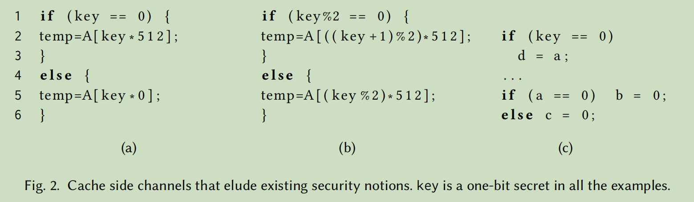

SpecSafe: Detecting Cache Side Channels in a Speculative World
Table of Contents
文章认为将转换缓存通道检测工具与预测执行工具相结合并不一定能涵盖所有可能的缓存侧信道。
1 新的预测执行侧信道

- 通过条件分支时的预测执行过程读取某些变量到缓存中，从而导致泄漏分支判断中变量信息。
1.1 这3变种的思考
- 个人认为，此类变种的意义为：通过错误训练+预测执行，可以通过侧信道泄漏更多的内容。 对于一般程序而言，执行的内容越多泄漏的信息越多，通过预测执行可以导致程序执行更多的内容，从而泄漏出更多的信息。 也就是，通过预测执行+正常执行来进行侧信道的攻击。 但估计这种攻击难度很大。
- 这3种变种的主要作用是泄漏key。
- a 中的代码形式不常见，为什么不直接写成temp=A[0]？
- b 中，误导向temp=A[((key+1)%2)*512]，则只有key%2=1的情况，会导致A[0]被加载到cache中，
这种可以泄漏key的值，如果存在循环则可能泄漏多位。
- 如果需要循环，那么循环过程会对预测进行矫正，如何克服？
- 需要细粒度地控制程序
2 Speculative-Aware Noninterference
cache中信息的可见程度。
文章使用block-trace observer模型，粒度为cache line。
2.1 现存定义的不足
主要无法找出上述新的侧信道泄漏。
侧信道安全形式化定义：Noninterferece property 不相干性。
策略 \(P\) 是公开变量的集合， \(m\) 为内存
Definition 1 (Low Eqivalence) . Given a policy \(P\) , two memories \(m_1\) and \(m_2\) are low-equivalent according to \(P\) ,written as \(m_1 \simeq_P m_2\) if and only if \(\forall x \in P. m_1(x) = m_2(x)\) .
\(s^{perf}_{\langle m,w \rangle}\) 表示没有预测执行的执行序列。
Definition 2 (Cache noninterference (CNI)) . A program s with policy \(P\) satisfies CNI if for all \(O\) , \(m_1 \simeq_P m_2\) , we have
\begin{equation} view(s^{perf}_{\langle m_1,0 \rangle}) = view(s^{perf}_{\langle m_2,0\rangle}) \end{equation}Definition 3 (SNI-GEN) . A program s with policy \(P\) satisfies SNI-GEN with transaction length \(w\) if for all \(m_1 \simeq_P m_2\) ,
\begin{equation} view(s^{perf}_{\langle m_1,0\rangle})=view(s^{perf}_{\langle m_2,0\rangle}) \Longrightarrow view(s^{mis}_{\langle m_1,0\rangle})=view(s^{mis}_{\langle m_2,0\rangle}) \end{equation}3 文章主要贡献：
- 提出了一种新的Spectre V1变种，这种变种通过预测执行过程中对缓存的修改来判断条件分支中关键字的值。
- 新的预测执行安全定义，Speculative-Aware Noninterferece。
- 新的程序转换，Novel Program Transformation
- Speculative-Aware Symbolic Execution，基于新的预测执行安全定义设计的符号执行。将符号执行结果输入SMT solver。